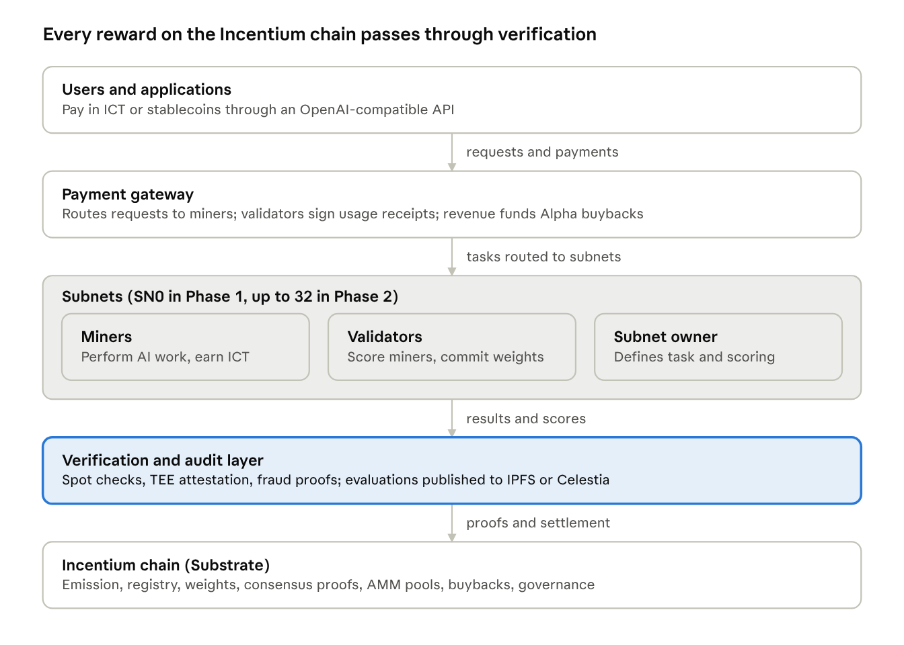

Incentium Whitepaper
Contents
- Abstract
- 1. Introduction and motivation
- 2. Design principles
- 3. System architecture
- 4. Tokenomics: the ICT coin
- 5. Phase 1 – Genesis
- 6. Phase 2 – Subnet Growth
- 7. Phase 3 – Utility Calibration
- 8. Consensus and verification
- 9. Security and attack vectors
- 10. Governance
- 11. Implementation and roadmap
- 12. Implementation status
- 13. Risks, regulation and disclaimer
- Appendix A: Protocol modules
- Appendix B: Glossary
Abstract#
Incentium (incentium.org) is a reward system for resource allocation of decentralized artificial intelligence: an open network in which machine intelligence is produced, verified and rewarded on a dedicated blockchain that no one owns. The network's native coin is ICT. The protocol builds on the ideas behind Bittensor but addresses three weaknesses: scoring that cannot be audited, work that cannot be verified, and issuance that is not tied to real demand.
Incentium launches in three phases. In Phase 1 (Genesis) there is a single subnet with one standardized task, and rewards are paid for verified work. Its first 90 days are a launch period with lighter participation rules, and three quarters of the rewards from that period are locked and released between day 150 and day 690. In Phase 2 (Subnet Growth) subnet registration opens by itself once five on-chain criteria are met, and new subnets are sold one at a time by Dutch auction; SN0 keeps at least half of all issuance, and the other subnets share the rest by stake. Each subnet gets its own Alpha token with the same tokenomics as ICT, paid to its miners, validators and owner as a bonus on top of their ICT; staking on a subnet means buying its Alpha in a pool no one owns. In Phase 3 (Utility Calibration) issuance is allocated by measurable utility — locked capital, burned fees and user revenue — with safeguards against manipulation.
Anyone can produce blocks: block producers are elected by stake every day, and the launch operator's keys step aside by themselves once enough independent producers have taken part for 30 days. The goal is a network where rewards follow real value, and where every rule is enforced by the protocol rather than by trust in individual participants: if its founder left, nothing would stop and nobody would notice.
1. Introduction and motivation#
Artificial intelligence today is produced mainly by a handful of companies that control data, compute and distribution. A decentralized market for machine intelligence can open production to anyone with compute or expertise, and let the market — not a central party — decide what has value.
Bittensor has shown that the model works in practice: miners deliver AI work, validators score it, and a blockchain distributes rewards. Its experience also points to weaknesses that Incentium sets out to fix:
- Scoring without audit. Validators can copy each other's weights or judge poorly without consequence.
- Work without proof. A validator can rarely know that a miner actually ran the correct model.
- Overfitting. Fixed benchmarks get memorized, and miners optimize for the test rather than for real quality.
- Issuance without demand. Allocation is driven by staking and speculation, not by whether anyone pays for the service.
- Concentrated power. A few validators control a large share of the weight.
Incentium keeps what works — subnets, a clear division of roles and market-based allocation — and adds verification, auditing and a direct link between user revenue and issuance.
2. Design principles#
- The protocol enforces; no one has to trust. Subnet registration, allocation and penalties are executed automatically by on-chain code.
- Rewards for verified work only. What cannot be checked is not rewarded.
- Manipulation must cost more than it pays. Every metric that drives issuance requires locked capital or paid fees.
- Value follows demand. Over time, user revenue — not newly minted coins — should support the price of ICT and of each subnet's Alpha token.
- Complexity is added gradually. New mechanisms are switched on when the network has shown it can handle them, not by the calendar.
- Nobody is needed. Subnet registration, the allocation of issuance, penalties and governance decisions are carried out by on-chain code. Temporary powers in the launch period expire by themselves at a fixed block. A decision taken by referendum takes effect without anyone having to act on it.
- No hidden allocations. No investor or team allocation; all ICT is issued by the protocol, apart from a disclosed 100 ICT genesis allocation to the launch operator, counted in the cap. The development fund is financed by a fixed share of issuance, and the 90-day launch period and its reward lock are disclosed in full (Section 5.1).
3. System architecture#
Incentium consists of five layers, from the users who pay for AI services down to the chain that settles rewards. The verification layer is what sets Incentium apart: no reward reaches the chain without passing through it.

Requests flow down from users to subnets; results, scores and proofs flow down to the chain, which settles rewards.
Roles:
- Miners perform AI work and are rewarded for verified output.
- Validators evaluate miners, commit weights and are audited themselves.
- Delegators stake ICT with validators and share in rewards.
- Block producers write and finalize the chain's blocks. Anyone can stand with a bond of ICT, and ICT holders back them by nominating; the chain elects the set every day (Section 8).
- Subnet owners buy a subnet slot at auction and define its task and scoring; they can hand control to a multisig or to the subnet's stakers.
Two layers of participants. The network rests on two layers. Miners run the miner software with an AI model on anything from a small PC or Mac to a large server, and the model they choose fits the machine (Section 5). Network operators run servers that keep the chain itself running and decentralized; each runs a full node and takes one or more of these roles:
| Role | What it does | Stake | Reward |
|---|---|---|---|
| Block producer | Writes and finalizes blocks (Section 8) | Bond of at least 100 ICT, plus nominations | 2% of issuance and all transaction fees, shared by blocks written |
| SN0 validator | Checks the miners' AI work and sets weights; holds the models it checks | At least 1,000 ICT from day 90 | The validators' share of SN0 issuance |
| Public RPC endpoint (optional) | Lets wallets, websites and miners read the chain and send transactions | Deposit for its entry in the register | Up to 5% of issuance, shared with archive nodes by measured availability |
| Archive node (optional) | Keeps the full history for explorers and audits | Deposit for its entry in the register | Counts double in the same 5% share |
The roles are separate on chain, because they have different stakes, rewards and penalties, and an operator can take any of them. One installer sets up a server for the roles its owner chooses. Public RPC endpoints and archive nodes register on chain, so websites, wallets and miners find many independent operators instead of a fixed list.
Paying for public access (decided 27 November 2026). Public RPC endpoints and archive nodes share up to 5% of issuance, taken from the development fund's 10%, so the fund keeps 3% after the block producers' 2%. The chain pays it automatically every day by measured availability: many independent validators and block producers test every registered endpoint, only checks that a majority agree on count, and an endpoint must return the correct block, not merely answer. An archive node counts double, since it costs more to run and also serves as an RPC endpoint. Each operator has a cap, the entry deposit is about 100 ICT, and whatever is not paid out stays in the fund, so 5% is a ceiling, not a fixed amount. The Parameters track can change the share. Until the register and the availability checks run on mainnet, the 5% stays in the fund.
Networking: Nodes communicate over libp2p and QUIC. Every message is signed with the sender's hot key, request limits scale with stake, and miners can sit behind relay nodes for DDoS protection.
Developer tools: Python and Rust SDKs, a CLI, a wallet with hardware-wallet support, a subnet template with a standard evaluation harness, a block explorer and an indexer. The chain is EVM-compatible (Frontier) from day one, with a bridge to other ecosystems.
4. Tokenomics: the ICT coin#
ICT has a fixed maximum supply of 21,000,000 and is issued only through block rewards. There is no investor allocation and no team allocation. The only genesis allocation is 100 ICT to the launch operator for transaction fees and initial stake, counted against the cap. Three quarters of the rewards earned in the 90-day launch period are locked and released between day 150 and day 690 (Section 5.1). All figures below are proposed starting values to be tested in simulation before launch.
| Parameter | Proposed value |
|---|---|
| Maximum supply | 21,000,000 ICT |
| Block time | 12 seconds (7,200 blocks per day) |
| Initial block reward | 1 ICT per block (7,200 ICT per day) |
| Halving | When half of the remaining supply has been issued (about every 4 years) |
| Development fund | 3% of issuance, governed by on-chain vote, plus whatever the endpoint share below does not pay out (10% until block production opens; Section 8) |
| Block producers | 2% of issuance plus all transaction fees |
| Public RPC and archive nodes | Up to 5% of issuance, by measured availability (Section 3) |
| Registration fee (miners and validators) | Burned in full |
| Subnet slot | Sold by Dutch auction; half to the treasury, half burned (Section 6.1) |
| Pool trading fee | 0.5%, half of which is burned |
Halving is triggered by the amount issued, not by block height, so the schedule holds even when part of the issuance is burned or not distributed.
Uses of ICT:
- Staking with validators, including on the subnet a validator serves.
- Standing as a block producer, or nominating one (Section 8).
- Buying subnet slots at auction.
- Buying and selling subnets' Alpha tokens in their pools.
- Payment for AI services through the payment gateway.
- Access: ICT locked for access in the holder's own wallet gives a share of the public gateway's capacity, pro rata to the share of all ICT locked for access. Locked ICT cannot be moved during a 7-day unbonding period, so the same tokens cannot grant access twice. A small free tier with a bot check stays open, so anyone can try the network without buying ICT. The public demo opens when Tier 1 (Qwen3.5-9B on GPU) is live, before the launch period ends; access tiers open once ICT can be traded. Gateway traffic does not count towards miner rewards at first, so a gateway operator cannot pay its own miners with fake traffic.
- Trading against USDC: an atomic swap between the Incentium chain and Base trades ICT for USDC wallet to wallet, with no bridge and no one holding funds in between. The swap contract on Base has no fee, no pause key and no privileged address of any kind. Whoever reserves part of an order pays a deposit of 2% (at least 2 ICT or 0.5 USDC), returned when the trade completes; if the reservation runs out, half is returned and half burned, so blocking orders costs something and nobody gains from a failed trade.
- Trading on EVM chains: the Incentium chain is EVM-compatible, so MetaMask works on it directly, and ICT moves to Base as an ERC-20 through a Hyperlane Warp Route that the project deploys and runs itself. Native ICT is locked while the same amount exists on Base, so the supply cap is unchanged. The bridge opens around the end of the launch period with transfer caps, a pause switch, continuous supply monitoring and an external audit; its validators start with the project, which is disclosed, and move to independent operators over time.
- Voting rights in governance.
Burning: Registration fees, half of every subnet slot payment, part of the trading fees and part of slashed stake are burned. As usage grows, burning can eventually offset new issuance.
5. Phase 1 – Genesis#
Phase 1 has one standardized task in a single subnet (SN0), and rewards follow verified effort. The phase lasts at least 6 months and ends only when the transition criteria are met.
The task: Miners run an open language model of their choice, from a list approved on chain, and answer tasks from validators. Tasks come from three sources, in this order: paid jobs from the gateway; an open public-goods queue that fills spare capacity, for example structuring and translating public texts, synthetic training data for small models and embeddings of public archives, with results published openly; and hidden control tasks with known answers that cannot be told apart from the others. Issuance therefore pays for useful output rather than for work done only to prove effort. There is no reward without verified work: a computer that runs no model earns nothing, and a holder who wants a share without running anything stakes ICT with a validator.
Effort is measured in verified work units:
where T is the number of tokens served and accepted, Q is a quality factor between 0 and 1, and A is availability during the period. A miner receives a share of the miner reward equal to its share of the sum of W.
Verification: Validators check a randomly chosen share of tasks (1–5%). Instead of generating the answer again, the validator feeds the prompt and the miner's answer through the reference model in one pass (prefill) and compares the probability distributions (logits) at every token within a tolerance, since hardware does not produce bit-identical results. Prefill is many times cheaper than generation, so a validator needs only a small fraction of the miners' capacity. Checks run after the answer is delivered and never slow down users. When validators holding at least half of the active validator stake (the stake whose weights counted in the last settled epoch) report the same failed check, the miner gets nothing for that epoch; when they hold at least two thirds, part of its bond is slashed. Three penalties within 30 days ban the key.
Allocation of issuance in Phase 1:
| Recipient | Share |
|---|---|
| Miners | 60% |
| Validators and their delegators | 30% |
| Development fund | 10% (once block production opens: 2% to block producers, up to 5% to public RPC and archive nodes, the rest to the fund) |
Sybil protection: Registration costs a fee that is burned, and each key is capped in how many work units it can be credited per epoch.
Validators: During the 90-day launch period, the launch operator registers and runs the first validators and miners (Section 5.1). After that, validators are run by the core contributors and by any independent operator that registers and stakes. This centralization is temporary and ends at the transition to Phase 2.
Model choice (decided 27 November 2026): SN0 is open to ordinary hardware and to new models as they appear. Instead of one fixed model, the chain holds a list of approved open models, each with its weight file's hash, the memory it needs and a value factor G. Each miner chooses a model its machine can run, and its work units become W × G, so a miner that offers the network a better model earns more ICT per verified token. The list starts with the Qwen3.5 family (Apache 2.0):
| Model, 4-bit | Download | Smallest machine | G (proposed) |
|---|---|---|---|
| Qwen3.5-0.8B | ~0.5 GB | 4 GB of memory | 0.05 |
| Qwen3.5-2B | ~1.3 GB | 8 GB of memory | 0.10 |
| Qwen3.5-4B | ~2.7 GB | 16 GB of memory | 0.20 |
| Qwen3.5-9B | ~5.5 GB | 32 GB of memory, or an 8 GB graphics card | 1.0 |
| Qwen3.5-27B | ~16 GB | a 24 GB graphics card or a data-center GPU | about 3 |
The model never takes more than a quarter of a miner's memory (decided 25 November 2026), so the computer stays fully usable while it mines: the miner software lists the open models whose memory need, with context, fits in 25% of the system or Apple unified memory, or entirely in a separate graphics card, and suggests the best of them. Without a graphics card, models above 4B are too slow to meet the validators' deadlines. G is set from each model's quality and measured cost per token, so a larger, better model pays somewhat more per unit of cost; the Parameters track recalibrates it every quarter within a limited step. Tasks are assigned at random in proportion to each miner's measured capacity, so a faster machine earns more with the same model, and two machines with equal capacity earn the same.
New models through governance. The protocol is model-neutral: anyone can propose an open-weight model, for example a small open Qwen4 model once it is released, and governance decides (Section 10, Updating models and software). A model opens when a Parameters-track vote has approved it and at least three validators have declared that they hold it; miners then download it and check its hash. A newer size or version of a model family the software already runs needs no new software; a new generation with a new architecture first needs a software release that supports it. A model being replaced is paid alongside its successor for a transition window (proposed: 14 days), and the miner software switches by itself. Each miner declares its model, and validators spot-check it against that model, so a miner cannot claim a better model than it runs. During the launch period only Qwen3.5-2B is open; 4B and 9B open a few weeks before day 90, after a test on the testnet.
Pool mining: The protocol supports pools natively, so that anyone can mine without running a validator-facing node of their own:
- A pool registers one key in SN0 and accepts any number of sub-workers.
- Each sub-worker signs a receipt for every piece of work it delivers.
- Validators verify the pool's output with spot checks and can trace a failed check to the sub-worker that produced it.
- The pool pays out ICT through an on-chain payout module, pro rata to verified work units. The pool fee is public, and anyone can check the distribution.
- Anyone may operate a pool; the reference pool published with the open-source software has no special rights.
Sub-workers always mine with their own key and wallet. A participant who rents a GPU from a third-party provider and runs the miner on it is mining in their own name; the protocol does not offer or arrange shares in other people's mining.
Paid work: Jobs that users pay for through the gateway (specification, Section 13) are served by SN0 miners, checked the same way and counted in W like any other task. The protocol, not the gateway or the miner, assigns every task: it goes to a miner drawn at random among the eligible miners of its model, weighted by capacity, using a public random beacon that anyone can check. Payments are pooled per epoch: the proposed 70% for miners is paid pro rata to W, exactly like issuance, 10% goes to validators by consensus weight, and 20% buys ICT on the market and burns it. The open public-goods queue fills whatever capacity paid jobs leave. Equal capacity, quality and uptime therefore earn equal ICT, from issuance and payments alike, whichever jobs a machine happened to get; within a single epoch the draw causes small differences that even out within days. Paying for fake jobs spreads the payment over all miners and burns a fifth of it, so it cannot pay off. Work that can wait, such as classification, extraction, short summaries, embeddings and image descriptions, is split into pieces of one to two minutes and sent to ordinary PCs, mostly through pools; real-time chat goes to models of 9B and above. Tasks carry no sensitive data, because miners see what they process.
5.1 Launch period (first 90 days)#
The first 90 days after genesis (18 November 2026) are a launch period designed to get the service running quickly. The participation rules meant for a mature, open network — registration fees, minimum validator stake and the per-key work cap — take effect after 90 days, so they do not hold back the start. In return, only a quarter of the ICT paid out for work done in the launch period is paid at once; the other three quarters are locked and released gradually.
| Rule | Launch period (first 90 days) | From day 90 |
|---|---|---|
| Registration of miners and validators | By the launch operator, who builds up SN0's first capacity; no fee | Open to everyone, with the normal fee |
| Validator minimum stake | None | 1,000 ICT |
| Genesis allocation | 100 ICT to the launch operator for fees and first stake, counted in the 21,000,000 cap | – |
| Rewards | 25% paid at once; 75% locked in an on-chain launch vault | Paid directly |
| End | Automatic after 648,000 blocks; can end earlier, never be extended | – |
Lock on launch-period rewards. A quarter of each reward for launch-period work is paid at once; the other three quarters are held in the launch vault. Counted from day 90 they stay fully locked for 2 months; the first 10% is released on day 150, then 10% every 2 months, so everything is released on day 690, 20 months after day 90. The runtime enforces the schedule; nobody can release the vault faster.
Amounts. 648,000 ICT are issued in the launch period. Miners and validators earn about 583,200 ICT: about 145,800 are paid during the period and about 437,400 (2.1% of the maximum supply) go into the launch vault. The other 64,800 ICT go to the on-chain development fund, which only governance can spend. The launch operator account and all hotkey addresses are published at launch, so anyone can follow the vault.
At the end of the launch period. In the block where the launch period ends, the runtime itself — not a person — carries out three disclosed steps: it removes the sudo key, so that from then on every change goes through on-chain governance; it creates and approves two bounties from the development fund, 25,000 ICT for marketing and up to 50,000 ICT for listing ICT on a recognised exchange; and it appoints their curator. The fund holds about 64,800 ICT at day 90, so the marketing bounty is funded at once and the listing bounty when the fund has grown enough, around day 104. The code that does this is public before genesis.
How the bounties are run. The curator is at first the launch operator, through a 2-of-3 multisig account whose keys are stored apart. The curator splits each bounty into child bounties — for example a brief for a video or a series of posts — and awards each one to the creator's or provider's address after the result is measured, publishing the measurement. Every award is public on chain and waits a few days before it can be claimed, during which governance can stop it; governance can also replace the curator at any time. A curator can never pay out more than the bounty holds, and what is left when a bounty closes returns to the fund. Paid content must be marked as advertising. The aim is to hand curation to independent curators over time.
Criteria for moving to Phase 2. Phase 2 begins when subnet registration unlocks, and it unlocks by itself (decided 25 Nov 2026): the chain checks once a day and opens registration in the first block where all five of these hold. No vote or person is needed.
- Day 180 after genesis (about 17 May 2027).
- At least 300 active SN0 miners as a 30-day average; an active miner is one paid in an epoch, neither caught by a failed spot check nor banned.
- Governance runs by itself: the sudo key is gone and at least 3 referenda have been approved.
- Trading is safe: governance has attested that the ICT⇄USDC swap contract on Base is audited and has no pause key.
- Alpha is live: the Alpha module (Section 6.5) is part of the runtime, so every subnet sold gets its own token and pool from its first day.
The progress towards each criterion is shown live at incentium.org/subnets.
6. Phase 2 – Subnet Growth#
In Phase 2 anyone can buy a subnet slot and run a subnet with its own task and incentive mechanism. Every rule below is enforced by the runtime; the figures were decided on 25 November 2026 and can later be changed only by referendum.
6.1 Registration by Dutch auction#
- One slot at a time. The first auction starts in the block where registration unlocks. After each sale the next auction starts 60 days later (governance may shorten this to 30 days).
- Price. SN1's slot starts at 50,000 ICT; every later slot starts at 4 times the price the previous slot sold for. The price falls by 25% a day, smoothly from block to block, down to a floor, and stays there until someone buys. The first buyer at the current price wins, so there is no race between bots.
- Floors by sale number: 1st slot 1,000 ICT, 2nd–4th 500 ICT, 5th–8th 300 ICT, 9th and later 200 ICT.
- Openness instead of approval. In the same transaction the buyer publishes the subnet's name, a description and the hash of its incentive-mechanism code. Nobody approves a buyer.
- Payment. Not refunded, ever: half is burned, and half becomes the ICT side of the subnet's pool when it opens (Section 6.5), up to what the pool's starting Alpha can match. Whatever the pool cannot take goes to the on-chain treasury.
6.2 Cap, immunity and removal#
- Cap. At most 8 subnets besides SN0 until 2029. From 1 January 2029 the cap doubles by itself (16, 32, 64, 128, 256) when every slot has been taken for 90 days, at least 75% of the subnets paid at least 10 miners per epoch on average over 30 days, and 180 days have passed since the last raise. Governance can also raise it at any time. Settlement is spread over the blocks of each epoch, so 256 subnets need no further code.
- No one is voted out for being weak. When the cap is reached, the auction waits until a slot frees up or the cap rises.
- Dead subnets. A subnet past its 180-day immunity in which no epoch paid at least 3 distinct miners for 30 days can be removed by anyone.
- Emergency brake. Incentium governance can close a subnet by referendum on the Root track (75% approval, one week before it takes effect), for example against abuse, also during the immunity.
- Nothing is refunded when a subnet is removed; stake on it moves to the normal unbonding queue.
6.3 Allocation of issuance#
The development fund takes its share first (10%; once block production opens, 2% of it goes to block producers and up to 5% to public RPC and archive nodes, the rest to the fund); the rest goes to the subnets.
- SN0 keeps at least half of all issuance through 2028; after that the floor can only be changed by a runtime upgrade.
- The other subnets' share is phased in. From the block where registration unlocks, their combined share rises linearly from zero to the rest (40% of issuance) over 180 days, so SN0 miners see no sudden drop.
- Shared by stake. That share is divided between the subnets in proportion to the ICT staked on each. Validators stake on the subnet they serve; a subnet without stake gets nothing. With Alpha (Section 6.5), the ICT staked on a subnet is the ICT in its pool.
Within each subnet, its share is divided as follows:
| Recipient | SN1 and later | SN0 (after registration unlocks) |
|---|---|---|
| Miners | 50% | 50 / 88 (about 57%) |
| Validators and their stakers | 38% | 38 / 88 (about 43%) |
| Subnet owner | 12% | none: SN0 has no owner |
A subnet with no usable weights in an epoch is not paid for it; its slice stays in the pot.
Decided 26 November 2026. Once Alpha is live, the validators' 38% is shared with everyone who has Alpha staked with them: each validator keeps a take it chooses between 0% and 18%, and the rest is paid in ICT to its stakers in proportion to their stake. This is the cash flow that gives Alpha its value (Section 6.5).
6.4 Control of a subnet#
A subnet is controlled by one key at first, and control can only move forward: to a multisig of 2 to 20 signatories, and from either to a subnet DAO in which the subnet's stakers decide. One key or a multisig can sell the subnet to another key; a DAO subnet stays with its stakers. The controller sets the subnet's own settings within the protocol's bounds (miner registration fee 1–1,000 ICT, 16–256 slots, penalties on or off) and publishes a new code hash with each release of its incentive mechanism. In a subnet DAO any staker can propose, votes run 5 days and are weighed by stake when the vote closes, and a decision that has more aye than nay stake and at least a third of the subnet's stake is carried out at once; the owner share then goes to the DAO's own account, which only DAO votes can spend.
What the protocol fixes for every subnet: its share of issuance, the 50/38/12 split, the consensus rules, removal and immunity, and the maximum number of neurons.
Penalties. A subnet can turn on penalties: when validators holding at least half of the subnet's active stake report a miner's failed work, the miner gets nothing for that epoch, and repeated penalties ban the key from the subnet. The subnet decides what counts as failed work; the protocol fixes the threshold and the consequences.
6.5 Alpha tokens and pools#
Decided 25 and 26 November 2026. Every subnet gets its own token, Alpha, with the same tokenomics as ICT, and one pool in which staking and trading are the same thing. Alpha earns its holders ICT, never more Alpha, so its price can be worked out the way an analyst values a share: from the ICT it pays. No issuance and no revenue is spent buying Alpha back.
Same tokenomics as ICT. Subnet 1 has Alpha1, Subnet 2 Alpha2, and so on. On the day a subnet opens, no Alpha exists. From then on exactly 7,200 Alpha are issued every day, halving on the same curve as ICT counted from the subnet's own first day, up to 21,000,000. No owner or DAO can change these rules.
Where each day's Alpha goes. Half is bonus and half is stock. The split is fixed for each subnet when it opens; a referendum can change it only for subnets opened later, and only within 25–75%.
- Bonus (3,600 a day). Paid every epoch to the subnet's miners, validators and owner in the same 50/38/12 split and by the same consensus result as their ICT, as Alpha staked on their own keys. The owner's Alpha is released evenly over 6 months. On top of a subnet's ICT, the bonus is what draws miners to it: in simulation it was worth about 130 ICT a day after three months and 80 ICT a day after a year for a subnet paid 288 ICT a day.
- Stock (3,600 a day). Goes into the pool, which no one owns, block by block (see Refilling).
What an Alpha pays: ICT. The validators' 38% of the subnet's ICT, less each validator's take of 0–18%, is paid in ICT to the Alpha staked with them (Section 6.3); in Phase 3 user revenue is shared the same way (Section 7.4). The value of an Alpha is the present value of that ICT, divided over all the Alpha that will share it. Paying in ICT matters: a network that pays its stakers in newly issued tokens only spreads the dilution around, and its stakers lose even when the advertised yield is high.
Staking means buying Alpha. Staking ICT on a subnet means buying Alpha with it in the subnet's pool, staked with a validator of one's choice. Unstaking means selling it back. Every staked ICT therefore deepens the pool. A subnet's share of issuance follows the ICT in its pool, and a validator's weight within the subnet follows the Alpha staked with it. SN0 has no Alpha and keeps ordinary ICT staking.
Opening the pool.
- For the first 10 days nothing can be traded. The stock collects (36,000 Alpha), the bonus is paid but cannot be sold yet, and the treasury half of the auction price is held for the pool; it counts as the subnet's stake meanwhile, so the subnet is paid from its first day.
- On day 10 the pool opens as an ordinary pool with real reserves on both sides, at a start price P₀ worked out on chain by the valuation formula: the ICT the average subnet's Alpha is expected to pay, discounted at a required return of 20% a year (a parameter on the Parameters track) and divided over all the Alpha that will be issued.
- The pool starts with ICT = the smaller of the held auction ICT and 36,000 × P₀, and Alpha = that ICT ÷ P₀. Only Alpha that has been issued goes in; no Alpha is created ahead of schedule. Auction ICT the pool cannot match goes to the treasury, and stock it does not take waits and is refilled like the daily stock.
- Once open, a pool is never closed: anyone can always sell Alpha back for the ICT in it.
Trading. The pool is an ordinary constant-product market (x · y = k): buying raises the price, selling lowers it. Every trade carries a price limit set by the trader, the least it accepts to receive; if the price has moved further, the trade is refused. The fee is 0.5%, half burned and half left in the pool. A marketplace on top routes swaps, including from one Alpha to another through ICT.
Refilling. The ICT side grows as people stake: when the price falls below what the dividend justifies, buying pays. The Alpha side grows with the stock, released block by block, never in lumps. While the price is more than 20% below its own 30-day average, the stock is held back; afterwards it is released, at most one extra day's stock per day. The total is unchanged, only the timing. In simulation this softened a 60-day buyers' strike only slightly, since bonus selling, not stock, drives such falls; it costs nothing and is kept.
Who owns the pool. Nobody. The pool is an account derived from the subnet number with no private key, so no one can sign a withdrawal from it: not the subnet owner, not the treasury, not the founder. Only trades move ICT and Alpha in it. Outside liquidity providers are not part of the first version; the pool is built so they can be added later by runtime upgrade.
Stakers carry the price risk. Someone who stakes 1,000 ICT does not necessarily get 1,000 ICT back: they get the dividends plus what their Alpha is worth when they sell. Because 7,200 new Alpha arrive every day, the price of each Alpha falls over time while the dividend makes up for it; in simulation stakers earned the required return. Many holders selling at once still move the price hard: half of all holders selling on one day cut it by 81% that day in simulation, and it recovered within about 20 days as buyers priced Alpha by its dividend. A pool started with little auction ICT dropped about a third on its first trading day as the closed days' bonus was sold.
When a subnet is removed. No more Alpha is issued, the pool stays open, and the owner's Alpha not yet released is burned.
A new subnet starts paying at once. Until any Alpha is staked in a subnet, all its validators count equally, so its first epochs pay miners and validators even though no one has bought Alpha yet. From the first staked Alpha, a validator's weight follows the Alpha staked with it.
Timing. Alpha tokens and pools are built (module subnet-pools, runtime 12) and run on the testnet since 26 November 2026. They are audited and installed on mainnet before subnet registration unlocks, which it cannot do without them (Section 5.1), replacing ICT staking on subnets other than SN0. Until then no such stake exists, so nothing has to be moved.
6.6 Subnet categories#
Incentium defines six subnet categories from the start, each with a standard unit of work and revenue, a standard verification module and a standard on-chain payment contract. Categories give no share of issuance of their own: the allocation rules in Sections 6.3 and 7 apply to every subnet alike. Their purpose is to make revenue comparable and to let new teams start from working templates. The categories follow the areas where subnets on other networks earn real revenue.
| Category | Unit | Verification |
|---|---|---|
| 1. Compute rental | GPU-hour | Hardware checks, uptime, test jobs |
| 2. AI inference, including verifiable and confidential inference (SN0 belongs here) | Tokens, requests | Spot checks by prefill |
| 3. Data, search and storage | Queries, GB-month | Retrieval checks, storage proofs |
| 4. Model building (training, fine-tuning) | Delivered model or adapter | Hidden test sets, comparative evaluation |
| 5. Applied AI for a sector (vision, code, marketing) | Completed task | Reference answers, customer rating |
| 6. Forecasts and signals | Signal subscription | Scored against outcomes afterwards |
An open category covers anything else. SN0 is the template for category 2; category 1 is the natural next one, because it reuses the same machines.
7. Phase 3 – Utility Calibration#
This section is the direction for Phase 3. It builds on the Alpha pools of Section 6.5 and will be simulated again with the rules decided on 25 November 2026 before it is adopted.
In Phase 3, ICT issuance is allocated between subnets by measured utility: each subnet's market value, its user revenue and its trading turnover. Each is measured in a way that makes manipulation cost more than it gains.
7.1 How the three metrics are measured#
- Market value (L) is the locked value of the subnet's pool (Section 6.5): the geometric mean of the ICT in the pool and the market value of the Alpha in circulation, averaged over 90 days. Market value alone follows quality well but rewards pumping; the pool reserve alone resists pumping but follows quality poorly. The geometric mean sits between them.
- User revenue (R) from the payment gateway is the strongest signal of real utility. Only revenue settled on chain counts, and the issuance a subnet can gain through R is capped by the value its revenue burns (Section 7.3), so paying yourself revenue costs more than it returns.
- Turnover (F) is measured as burned fees, counted only on each account's net daily flow per subnet. A same-day round trip therefore counts as zero. Simulation showed that, at a uniform fee rate, fees and volume move together, so what deters wash trading is the fee rate relative to the metric's weight, not the choice between them.
7.2 Allocation formula#
where the bars denote moving averages: 90 days for L, 30 days for R and F. A subnet's share of issuance is its S divided by the sum of S across all subnets.
7.3 Safeguards against manipulation#
- Cap: No subnet receives more than 18% of issuance.
- Floor: New subnets receive at least 1% for their first 30 days.
- Smoothing: Long moving averages keep short-term pumps from feeding through.
- Net-flow fees and a low fee weight: In simulation, wash trading of up to 20,000 ICT per day lost money in every tested strategy, including buying one day and selling the next.
- No external oracles: All inputs already exist on-chain.
Revenue cap (proposed, 20 Nov 2026): The issuance a subnet gains through R in a period may not exceed k times the ICT value burned from its revenue in that period (half of the Alpha its revenue buys, valued at a time-weighted price), with k below 1 (proposed 0.8). Self-paid revenue then always costs more than the issuance it brings, whoever pays it. Weight that R cannot use under the cap is redistributed to L and F. The rule is not yet simulated and is listed as open work in the specification.
7.4 From subsidy to revenue#
Decided 26 November 2026. User revenue is paid out like issuance: settled revenue in ICT is split 50/38/12 between miners, validators with their stakers, and the owner, and the stakers' part reaches them in ICT less the validator's take. Nothing is spent buying Alpha back. A subnet's token is therefore backed by real revenue, paid to its holders, and high-revenue subnets also get a larger share of issuance through R. Buying back would have done less for holders: in simulation only the half of a buyback handed to stakers reached them, while the ICT of the burned half stayed in the pool.
8. Consensus and verification#
Block production (decided 26 November 2026). Blocks are produced and finalized by an elected set of block producers (Aura for block production, GRANDPA for finality, nominated Proof of Stake for the election). Anyone can stand with a bond of at least 100 ICT, and any holder can back up to 16 candidates with at least 10 ICT; every day the chain elects 20 producers by stake (Phragmén). Producers and their nominators share 2% of issuance, taken from the development fund's share, plus every transaction fee, by the blocks they write and after each producer's commission. A producer that signs two conflicting blocks loses at least 10% of its own and its nominators' bond, burned after a 6-day delay in which a referendum can cancel it; a producer that writes no block in a day is paid nothing and has to stand again. During the launch phase the four genesis keys of the launch operator keep reserve seats beside the elected set; once at least 7 independent producers have been elected every day for 30 days in a row, the reserve ends by itself, for good, and four more seats open to election. Validators of subnets and block producers are separate roles: a validator scores AI work, a block producer writes the chain.
Subnet consensus. Incentium uses an extended variant of Yuma Consensus in which validator weights can be audited and poor judgment is penalized.
Commit-reveal weights. Validators first submit an encrypted hash of their weights. The weights are revealed automatically after a fixed period using a drand time-lock. No one can therefore copy another validator's weights before they are locked in.
Consensus computed with proofs. The Yuma computation runs off-chain, and the chain verifies a cryptographic proof (a zkVM such as SP1 or RISC Zero) that it was done correctly. This removes the limit of roughly 256 participants per subnet that applies when the computation runs directly on-chain.
Bounded validator power. A validator's influence grows with the square root of its stake, and no validator may hold more than 10% of the weight in a subnet. Weight is further adjusted by the validator's audit record over time.
Auditing evaluations. Validators publish prompts, responses and scores to a data-availability layer (IPFS or Celestia). Randomly selected auditors reproduce a sample of the evaluations. Deviations beyond a tolerance are slashed.
Verifying miner work, in tiers by cost:
| Method | How it works | Use |
|---|---|---|
| Spot checks | 1–5% of tasks are scored by prefill against the reference model and compared on logits | All subnets, from Phase 1 |
| TEE attestation | Confidential computing (H100/H200, Intel TDX, AMD SEV) proves which code and model ran | Subnets with high value per request |
| Optimistic ML | Results are accepted unless challenged with a fraud proof within a deadline | Heavy computations |
| zkML | A cryptographic proof that the model was run correctly | Small models and niche subnets |
Guarding against overfitting. Test sets are hidden and rotated. Tasks are generated only after miners have submitted their commits. In Phase 3, part of the score is based on real user traffic.
9. Security and attack vectors#
| Attack | Description | Countermeasure |
|---|---|---|
| Sybil attack | One actor registers many identities to capture rewards | Burned registration fee, per-key caps on work units, stake requirements for validators |
| Weight copying | Validators copy others' weights instead of evaluating | Commit-reveal with drand time-lock |
| Taking over block production | An actor elects its own block producers to censor or rewrite the chain | Election by stake among open candidates; GRANDPA finality needs two thirds of the producers; slashing for conflicting votes |
| Validator collusion | Validators agree to favor certain miners | Square-root weighting, 10% cap per validator, random audits with slashing |
| Fake work | Miners return output from a cheaper model | Spot checks; no epoch payout when half of the active validator stake reports a failure, bond slashed at two thirds; TEE attestation, fraud proofs |
| Wash trading | Subnet owners trade with themselves to inflate metrics | Fees counted only on each account's net daily flow, with a low weight in the allocation formula |
| Price pumping | Thin pools are pumped to raise market value | Geometric-mean metric, 90-day averages, and the start reserve's ICT excluded from L |
| Front-running stock releases | Traders trade ahead of predictable stock releases | Stock released in small amounts every block |
| Supply-chain attack | Compromised software packages drain wallets | Signed releases, reproducible builds, hardware wallet support |
| DDoS on miners | Attackers knock out competing miners | libp2p over QUIC, stake-based rate limits, relay nodes |
Key separation: Every participant has a cold key for funds and a hot key for operations. The hot key cannot move funds, so a compromised server does not mean lost holdings.
Insurance fund: Part of slashed stake goes to a fund that can compensate participants after protocol failures.
10. Governance#
Incentium has no foundation or company. Governance is on-chain from genesis and widens step by step; every runtime upgrade passes through a time-lock so that participants can react before changes take effect.
- Phase 1: Pseudonymous core contributors maintain the open-source code and propose upgrades. The development fund is an on-chain treasury from genesis: every payment from it needs an on-chain vote by ICT holders.
- From day 90: Every change goes through on-chain referenda (OpenGov model); there is no sudo key and no committee. A decision takes effect by itself when its referendum passes.
- Bug fixes use the Emergency track (below) instead of a committee with special powers.
Voting in practice. There are no meetings and no notice periods. Anyone can submit a proposal with a deposit. After a short preparation period, ICT holders vote yes, no or abstain from their own wallet during a fixed voting period (proposed 7 days, and 3 days for small spends from the fund), with more weight for those who lock their ICT for longer after the vote. A proposal passes when it reaches both the required approval and the required turnout, and takes effect after the time-lock. ICT held in the launch vault cannot vote until it is released. Three referendum tracks exist from genesis: Root for runtime changes and protocol settings, Treasurer for large spends and Small spender for spends up to 1,000 ICT. A Parameters track (runtime 12) changes settings from a fixed list only, each within the bounds its own module enforces: the fund's and block producers' shares of issuance, the spacing, cap and tiers of subnets, the number of block producers and staking minimums, and Alpha's required return and bonus share for new subnets. It needs a 50 ICT decision deposit and a 7-day vote with approval falling from 100% to 60%, and takes effect a day after it passes. Everything else, including runtime upgrades, the subnet emergency brake and the swap attestation, stays on Root. A fifth track, Emergency, can do one thing only: authorize a runtime upgrade that fixes a bug. It needs a 1,000 ICT decision deposit and an approval of 90–100% with high turnout, and with broad, fast support a fix takes effect in about five hours. Turnout counts only ICT that can vote, so the launch vault, the fund and other protocol accounts are left out. Proposals, votes and the fund's bounties are shown at governance.incentium.org, where holders vote with Talisman or SubWallet.
Runtime upgrades by referendum. A referendum approves only the hash of the new runtime, so the proposal is small and needs no large deposit. Once it passes, anyone can upload the code; the chain accepts it only if the hash matches, the name is unchanged and the version is higher, and charges no fee. The tool for this is part of the open-source code.
Who can still act alone. Before day 90 the sudo key can do anything, and the launch operator's genesis keys produce the blocks. The plan for the remaining weeks is to hold sudo in a 2-of-3 multisig, and to have runtime 12, which opens block production, on mainnet well before sudo ends. After day 90 nothing is left that one person can do alone: no key can change the runtime, move the treasury, pause the swap or move funds out of a subnet's pool.
Sudo in the launch period. During the launch period a sudo key held by the launch operator can make urgent fixes and runtime upgrades without a vote. This is disclosed, every use is visible on chain, and the key is removed automatically by the runtime at the end of the launch period. Apart from the two bounties described in Section 5.1, which the runtime creates at that moment, every payment from the development fund needs an on-chain vote.
Updating models and software#
Incentium is built as a fully decentralized network: no person or company decides which AI models it runs or which software its participants use. Open models improve quickly, so the models the network runs will need to be reviewed and updated continually. New models can be taken into use whenever governance decides it, and anyone can prepare that decision.
Any validator, miner or independent developer can test a new model on its own, with the open source code, and propose it for a vote. In practice:
- Develop. If the model needs it, someone updates the miner and validator software, for example to a newer version of the inference engine (llama.cpp) that supports a new architecture. The code is open, so anyone can do this. A standing treasury bounty for "new model integrated and tested" pays whoever does the work once the proposal passes.
- Test. The developer, and preferably two or three other validators, run the new software and model on their own machines, against the public testnet or a local test network that anyone can start in minutes. They publish a test report with three things: that the build is reproducible, so the same source code gives the same file hash and anyone can confirm the program was built from the open code; the measured differences between machines (Intel, AMD, Apple, NVIDIA), from which the spot-check tolerance is set; and speed and memory use, from which the value factor G is set.
- Propose. One proposal on the Parameters track holds both the model and the software: the model file's hash, its value factor and tolerance, the hash of the software release that runs it, and a link to the test report. It needs a deposit of 50 ICT, and ICT holders vote for 7 days.
- Update. Once the proposal passes, the miner software and the validators update themselves to the approved release and check its hash against the one recorded on chain. No one has to trust a particular server or a person who "publishes" the software: the vote decides what is valid. The model opens as soon as three validators have declared that they hold it.
This is the same principle as for runtime upgrades after day 90, where a referendum also approves only a hash and anyone can build the code and check it. The difference is that the runtime lives on chain and is replaced automatically, while miner and validator software runs on each participant's machine and therefore checks itself against a register on chain.
Still to be built for this to work without the launch operator: a register of approved software releases on chain (component, version and hash, set by the Parameters track); reproducible builds of the miner and validator software; a testnet run by several operators, or a ready recipe for local test networks; the standing bounty for model integration; and a code repository with several maintainers and mirrors outside the launch operator's control (Codeberg, Radicle), so that no single person can stop an update.
Protected parameters: Maximum supply and the halving rule, for ICT and for every Alpha token, can only be changed by a supermajority (at least 75%) and a 30-day time-lock.
11. Implementation and roadmap#
Incentium moves through a preparation period and three phases, and each transition is gated by criteria rather than dates. Phase durations after Phase 1 depend on when the gates are met.

Gate 1 is the automatic unlock of subnet registration described at the end of Section 5. Gate 2 requires a live payment gateway, at least 8 subnets with user revenue, a completed audit of the Phase 3 modules and an approved governance vote.
Implementation principles:
- Specification first. Every module is specified with its state, transitions, formulas and edge cases before it is built. Parameters in this paper are locked only after agent-based economic simulation.
- One reference client, fully open source. The node is built on the Polkadot SDK. Miner, validator and pool software, SDKs and the wallet are published under an open-source license with reproducible, signed builds.
- No hard forks between phases. Phase 2 modules are added by runtime upgrades before they are needed and switch on by themselves when their on-chain criteria are met.
- Three testnet stages. A closed devnet, a public testnet and an incentivized testnet that doubles as a stress and attack test.
- Independent review. At least two independent audits of the chain, an audit of the economic model and a public bug bounty before genesis.
12. Implementation status#
Mainnet runs the Phase 1 core today; most of what this paper adds for SN0 lives in the reference miner and validator, not in the runtime, so it can change without a hard fork. The table below separates what is in the code on 26 November 2026 from what still has to change or be done. Section 16 of the specification lists each change with the module or file it touches.
| Area | In the code today | What changes or must be done |
|---|---|---|
| Chain, issuance and launch period | Mainnet live since 18 Nov 2026; issuance with halving, 10% to the fund, launch period and launch vault | 2% of issuance to block producers with runtime 12; up to 5% to public RPC and archive nodes once the endpoint register and availability checks run |
| Block production | Mainnet: four genesis keys of the launch operator on two servers, plus a third node for bootstrapping and RPC. Runtime 12 (open block production) on the testnet since 26 Nov 2026; the move from fixed keys to elected producers ran without a stop | Mainnet upgrade to runtime 10, 11 and 12 before day 90, aimed at 1 February 2027; at least 7 independent producers; signing on the Validators page |
| Governance | Treasury, bounties, referenda with conviction voting; the runtime removes sudo at day 90. Emergency track and upgrades by hash in runtime 11 (a referendum installing it on the testnet takes effect about 4 Dec 2026); Parameters track in runtime 12. Governance page at incentium.org/governance with voting from one's own wallet | Mainnet upgrade before day 90; sudo in a 2-of-3 multisig until then; test that turnout thresholds can be met |
| SN0 tasks | The reference validator sends synthetic prompts (random text); the checks are sound but the answers have no use | Paid jobs, an open public-goods queue and hidden control tasks (Section 5) |
| Models | Four fixed tiers on chain; Qwen3.5-2B is the only open model; the miner software keeps the model within a quarter of memory and picks it on Mac, Windows and Linux | The open model list replacing the tiers (decided 27 Nov 2026): model storage, set_model on the Parameters track, miners declaring and changing their model, a model picker in the miner software; 4B and 9B opened before day 90; tolerance tested on Intel, AMD and Apple processors |
| Work units | W = T × Q × A × G; every miner gets the same number of tasks per epoch | Tasks assigned by the protocol at random in proportion to capacity, paid and unpaid alike; payments pooled per epoch and paid pro rata to W; G per model from quality and measured cost per token, recalibrated quarterly |
| Network operators | Block-producer installer (install-validator.sh); SN0 validator software set up by hand; two public RPC endpoints, both the launch operator's, written into the web pages; the testnet's RPC node keeps the archive |
One installer for all operator roles; an on-chain register of RPC and archive endpoints that web pages, wallets and miners read; validator model declarations; the 5% share for RPC and archive operators, paid by measured availability; the explorer able to use any registered archive node (specification, Section 19) |
| Model and software updates | Code open on git.incentium.org with a mirror on GitHub; releases built and published by the launch operator; the testnet runs on the launch operator's server | Register of approved software releases on chain, set by the Parameters track; reproducible builds; a testnet run by several operators; a standing bounty for model integration; several maintainers and mirrors (Section 10) |
| Verification | Spot checks regenerate the answer; quorum slashing and a three-strike ban | Prefill scoring; validators declare the models they hold; a model opens when three validators can check it |
| Weights and consensus | Hash-based commit-reveal; Yuma computed on chain for SN0 | drand time-lock and proof-based Yuma remain planned (Section 8) |
| Pools and onboarding | Pools, bonds and pro-rata payouts in the runtime; pull-based miner and install script | Pool web page and a miner app for Windows and Mac before day 90 |
| Trading ICT | ICT⇄USDC atomic swap on mainnet since 24 Nov 2026 (version 1: 0.1% fee and pause key held by the launch operator, free reservations, orders capped at 100 ICT). Version 2 built and tested on 26 Nov 2026: no fee, no pause key, reservation deposits half returned and half burned, deadlines extended if Incentium halts | Version 2 on the testnet and Base Sepolia, then audit; switch mainnet to version 2 and pause version 1; trading page that reads both chains directly |
| Explorer | explorer.incentium.org live | Show swap activity; from Phase 2 show each subnet's allocation inputs per epoch |
| Gateway and API | Not built | OpenAI-compatible API with streaming, a batch API and payment; a public chat demo; listing on OpenRouter |
| Phase 2 | Runtime 10 (on the testnet since 25 Nov 2026): automatic unlock with five criteria, Dutch auction, issuance sharing, staking per subnet, subnet control and DAO, penalties, dead-subnet removal, the cap ladder and the subnet page at incentium.org/subnets | Mainnet upgrade before day 90; a miner bond per subnet that penalties can slash |
| Alpha and Phase 3 | Alpha, pools and dividends (Section 6.5) built as module subnet-pools and connected to the registry and consensus; runtime 12 on the testnet since 26 Nov 2026, where a full rehearsal with a bought SN1 runs now; pool page at incentium.org/pools with staking from one's own wallet. Metrics, payments and access modules are not built |
Finish the rehearsal; audit together with swap version 2; mainnet before registration unlocks; simulate Phase 3 with the new rules |
| EVM and bridge | Not in the runtime | EVM support and a bridge route to Base as specified, or rely on the atomic swap until a bridge is audited |
| Legal | No legal entity | Legal review of who contracts with paying users, privacy, MiCA and the EU AI Act before public trading, the paid gateway and the miner app |
13. Risks, regulation and disclaimer#
Key risks:
- Adoption: Without useful subnets and paying users, ICT has no fundamental value.
- Reflexivity: Higher prices attract more stake, and stake steers issuance between subnets. If the link to real revenue is weak, this loop can reverse sharply.
- Stakers' price risk: Staking on a subnet means holding its Alpha (Section 6.5). A subnet that loses its users loses its stakers money, and a rush to unstake makes it worse.
- Concentration: Subnet issuance follows stake, and Phase 2 starts with few subnets and few large holders, so a small group could steer much of it at first. SN0's floor of half of all issuance limits how much.
- Technical risk: zk proofs of consensus and verification of AI output are still maturing technologies.
- Centralization in Phase 1: The network depends on a small group of core contributors and validators until the transition to Phase 2. The launch operator's keys produce every block until runtime 12 is on mainnet and independent producers are elected, and the testnet runs on one operator's server; sudo ends by itself at day 90, but code maintenance still depends on people, paid from the treasury. About 145,800 ICT earned in the launch period can be sold as soon as they are paid, and about 437,400 more (2.1% of the maximum supply) unlock between day 150 and day 690 and may then be sold.
- Competition: Bittensor and other decentralized AI networks have a large head start.
Regulation: If ICT is offered to the public or admitted to trading in the EU/EEA, it will likely fall under the Markets in Crypto-Assets Regulation (MiCA). This requires, among other things, a published crypto-asset white paper meeting MiCA's content requirements. Incentium has no issuing company, foundation or chosen jurisdiction: the protocol, the marketplace front end and the reference software are published as open source and operated by no one in particular. That does not by itself remove legal exposure for the people who develop, launch or promote it, so legal advice should be obtained before launch.
Privacy: Miners on open models see the content they process. A public chat or API must therefore tell users not to send personal or confidential data and keep no logs, and confidential work must go only to approved operators or machines with trusted execution. Sending personal data of users in the EU/EEA to anonymous machines in unknown countries is hard to make lawful, which is part of the legal review before the gateway opens.
Disclaimer: This document is a draft for discussion. It is not an offer to sell or a solicitation to buy any asset, and it is not financial, legal or tax advice. All parameters are proposals and may change. Crypto-assets can lose all of their value.
Appendix A: Protocol modules#
All modules are written in Rust as Substrate pallets. Phase transitions follow on-chain criteria, so no hard fork is needed between phases.
| Module | Phase | Function |
|---|---|---|
ict-emission |
1 | Halving and allocation to the subnet pot and the development fund |
subnet-registry |
1–2 | Automatic unlock, Dutch auction, subnet control and DAO, penalties, dead-subnet removal, cap ladder |
work-verify |
1 | Spot checks, slashing, the open model list and pool payouts |
weights |
1 | Commit-reveal of validator weights |
consensus |
1–2 | Yuma consensus, staking per subnet, sharing issuance between subnets and epoch payouts spread over the epoch (computed on chain today; proof-based version planned) |
alpha-assets |
2 | Alpha coins with ICT's tokenomics: 7,200 a day, half as a bonus to the subnet, half to the pool's stock (built with amm and dividends as one module, subnet-pools) |
amm |
2 | Pools no one owns, where staking is buying Alpha; opening at the valuation price after 10 days, stock release with hold-back, swaps with price limits, marketplace router |
dividends |
2 | The validators' 38% of a subnet's ICT, less each validator's take (0–18%), paid in ICT to the Alpha staked with them |
utility-metrics |
3 | Utility measurement, caps and floors |
payments |
3 | User revenue paid out 50/38/12 like issuance, the stakers' part in ICT |
| governance | 1 | On-chain treasury, bounties and child bounties, multisig, referenda with conviction voting and five tracks including Emergency and Parameters; removes sudo and creates the two launch bounties at day 90 |
block-producers with staking and session |
1 | Open block production: election by nominated Proof of Stake, the genesis keys' reserve and its automatic end, rewards from 2% of issuance and transaction fees, slashing and the offline rule |
ict-swap |
1 | The Incentium side of the ICT⇄USDC atomic swap; the IncentiumSwap contract is its Base side |
phase-control |
All | Phase transitions by on-chain criteria |
Appendix B: Glossary#
| Term | Meaning |
|---|---|
| Miner | A participant that performs AI work in a subnet |
| Validator | A participant that evaluates miners and submits weights |
| Block producer | A participant elected by stake to write and finalize the chain's blocks |
| Nominator | An ICT holder who backs block producers with stake and shares in their rewards |
| Subnet | A sub-network with its own task and incentive mechanism |
| Alpha coin | A subnet's own token (Alpha1 for Subnet 1, and so on), issued like ICT; half is paid as a bonus to the subnet, and staking on the subnet means buying it in the subnet's pool |
| Yuma Consensus | The algorithm that turns validator weights into rewards |
| Slashing | Confiscation of part of a participant's stake as a penalty |
| Dutch auction | An auction where the price starts high and falls until someone buys |
| Subnet DAO | Control of a subnet by its stakers, voting by stake |
| EMA₃₀ | Exponential moving average over 30 days |
| TEE | Trusted Execution Environment, hardware that proves which code ran |